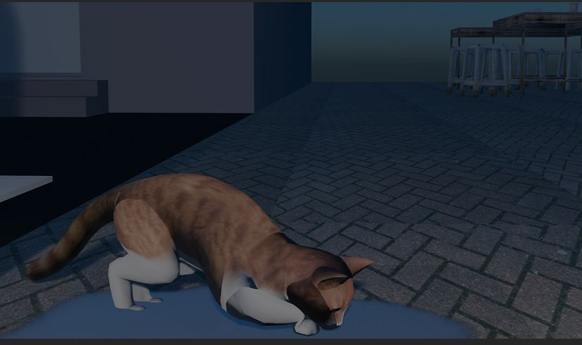
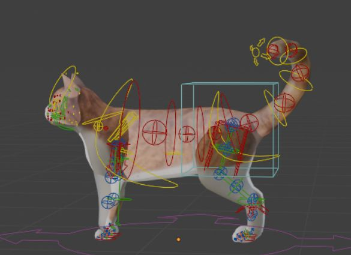
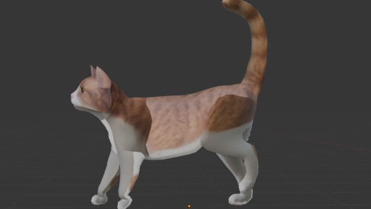
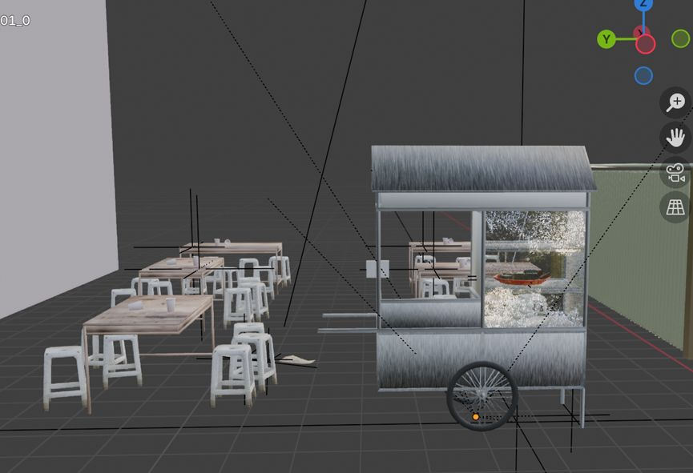

意外過世的女孩，靈魂暫時寄住在一隻流浪貓身上。牠走過城市，在麵攤前遇見正在工作的媽媽。媽媽摸頭的那一刻喚醒了記憶，她認出這是女兒，用貓咪的身體補上了沒能說出口的告別。
兩人小組完成。我負責鏡頭設計與角色動畫，並參與骨架綁定、算繪與剪輯。為了讓貓的動作自然，我們先看真實的貓咪影片，再一個一個復刻走路、喝水、搖尾巴的動作。



意外過世的女孩，靈魂暫時寄住在一隻流浪貓身上，回到媽媽的麵攤前，補上沒能說出口的告別。

意外過世的女孩，靈魂暫時寄住在一隻流浪貓身上。牠走過城市，在麵攤前遇見正在工作的媽媽。媽媽摸頭的那一刻喚醒了記憶，她認出這是女兒，用貓咪的身體補上了沒能說出口的告別。
兩人小組完成。我負責鏡頭設計與角色動畫，並參與骨架綁定、算繪與剪輯。為了讓貓的動作自然，我們先看真實的貓咪影片，再一個一個復刻走路、喝水、搖尾巴的動作。


